Topic: Fire Growth
Related Reading: various notes.
Submission: Upload your files fire.m and fireExtra.m to the git repository.
For this assignment, you must work individually in regard to the design and implementation of your project.
Our goal for this assignment is to write a program that simulates the following model for fire growth. We assume that we have a rectangular grid with a fixed number of rows and columns. Initially, the grid is presumed to have trees that can fuel a fire. We then simulate a fire that starts at a specified cell of the grid. At each step, the fire burns out all of the fuel of its current cell, while moving to an adjacent cell that still has fuel (horizontally or vertically; not diagonally). In particular, if there is a choice of neighboring cells having fuel, it picks one of those choices uniformly at random for the next step. A trial should end when the fire either reaches a cell at the boundary of the grid, or when it reaches a location in which all neighboring squares have already been visited, in which case the fire burns out.
Create a file fire.m implementing a function with the following specifications.
function outcomes = fire(numRows, numCols, startRow, startCol, trials) % Simulate the spread of a fire. % USAGE: outcomes = fire(numRows, numCols, startRow, startCol, trials) % The simulation will be performed on a grid with % specified number of rows and columns, assumed to be numbered % starting at (1,1) at the top-left. The fire begins at location % (startRow, startCol) within that grid. % % An individual trial will have one of five outcomes: % 1) it reaches the right edge of the grid % 2) it reaches the bottom edge of the grid % 3) it reaches the left edge of the grid % 4) it reaches the top edge of the grid % 5) it burns out within the grid % The returned outcome will be a row-vector of length five % designating the percentage of trials that resulted in % such outcomes. For example, the value outcomes(5) is the % percentage of trials that burned out. % % input argument trials specifies the number of independent % trials. If not specified, one trial will be performed. % % When only one trial is to be performed, the function animates % the spread of the fire.
A series of frames from a trial of fire(7, 7, 4, 4)
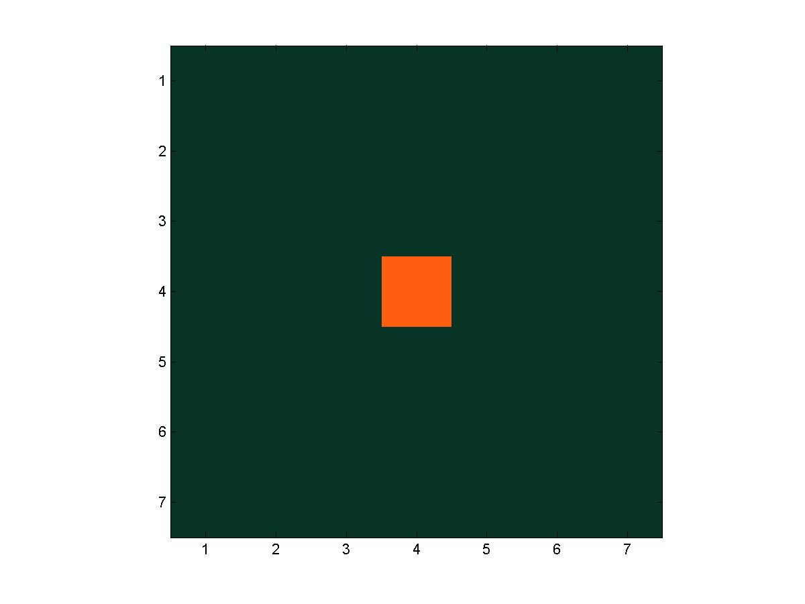
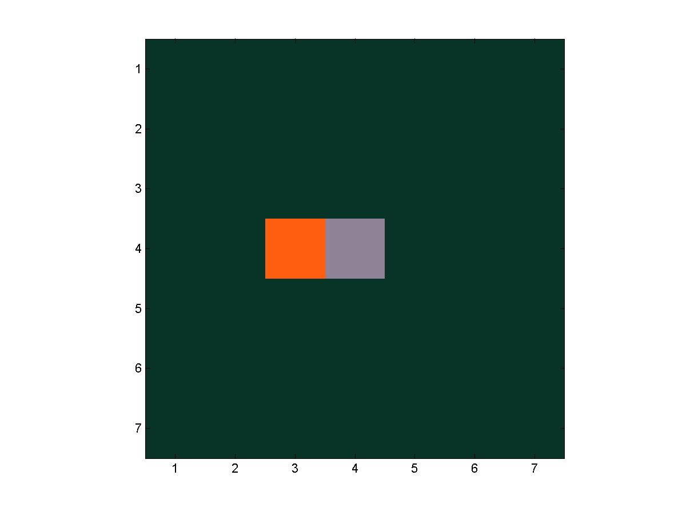
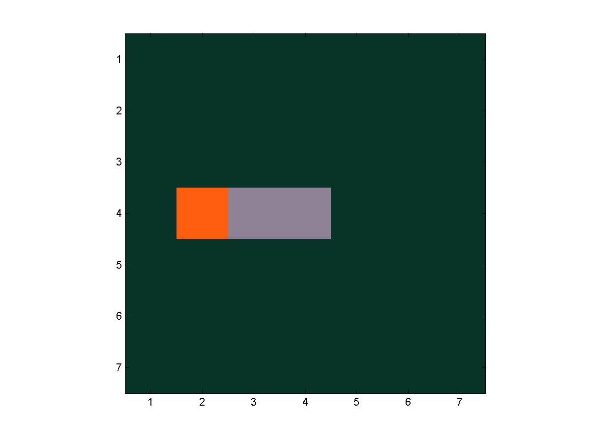
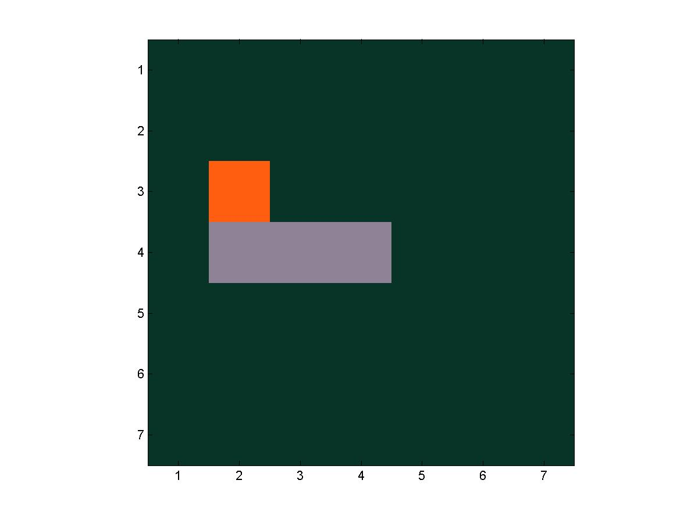
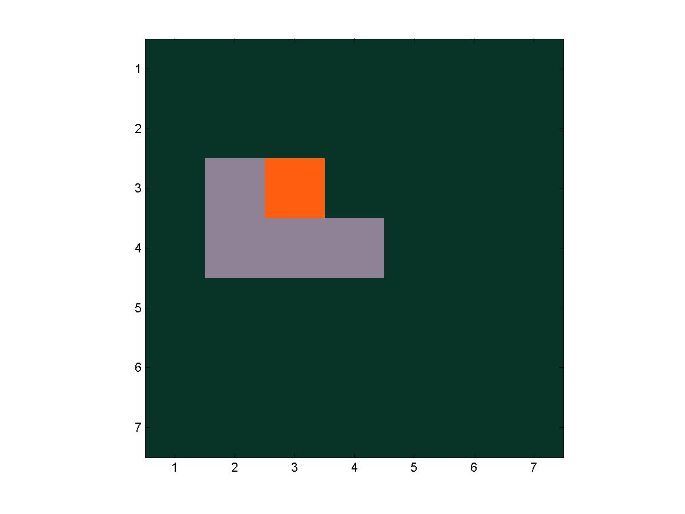
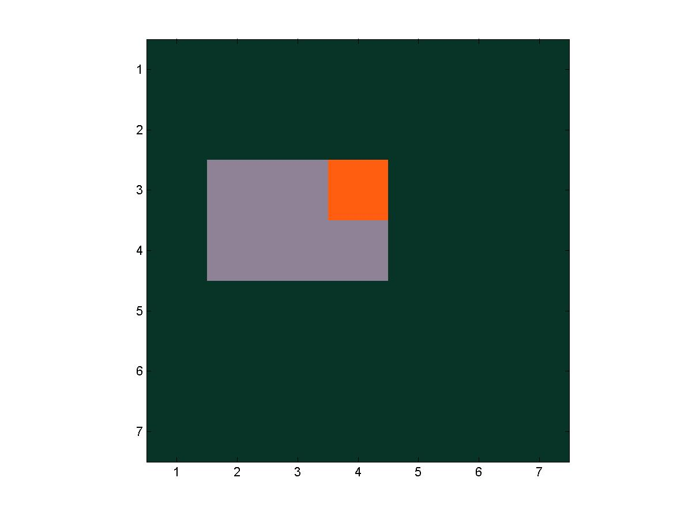
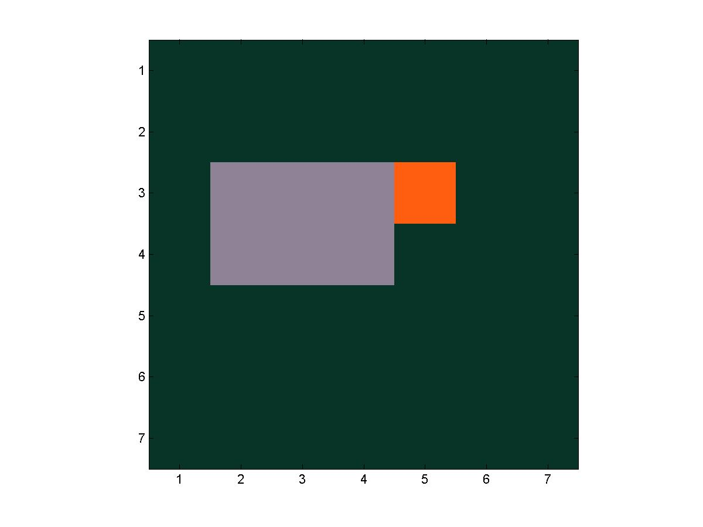
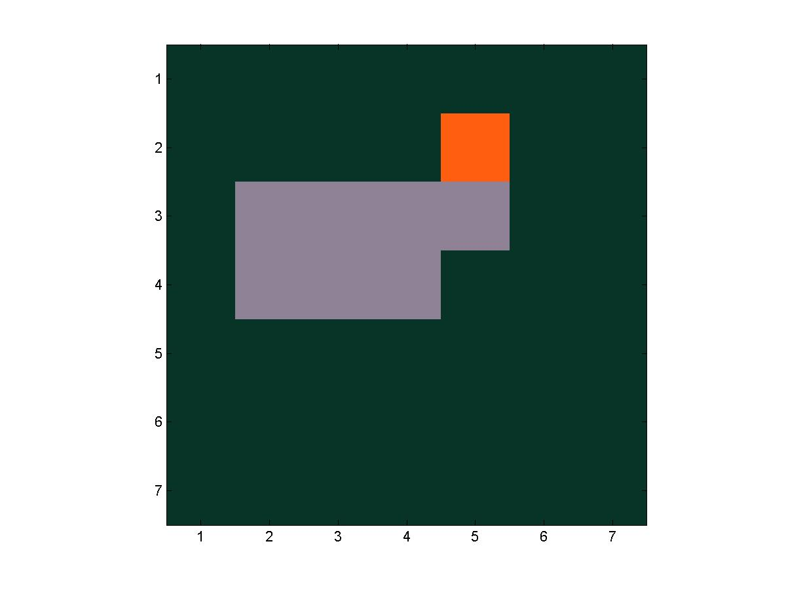
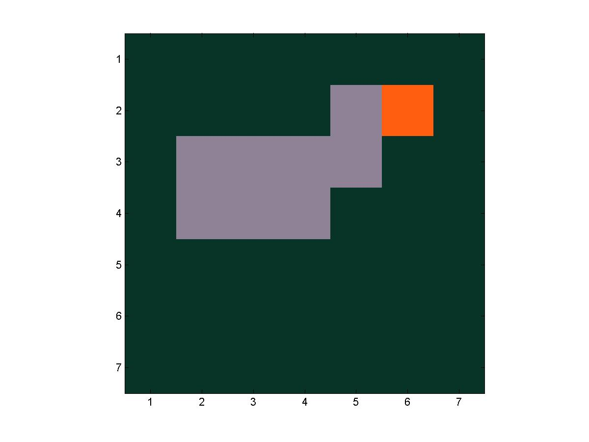
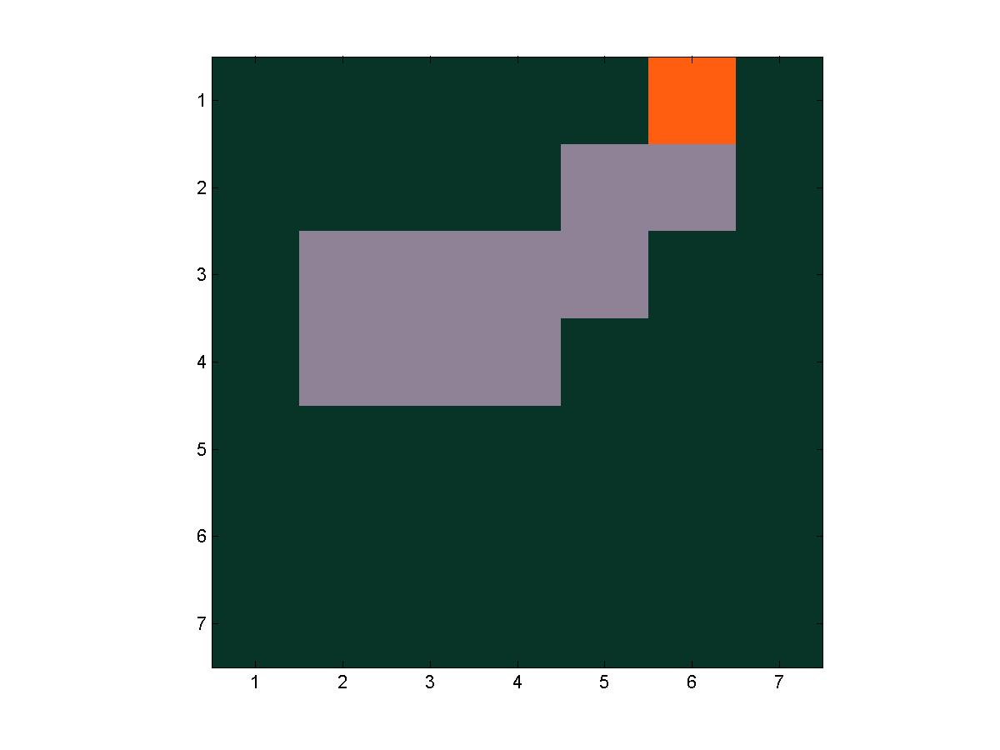
The next step goes to the left, exiting the grid.
The final frame of a trial fire(20, 30, 10, 15) in which the fire reaches the bottom edge of the region.
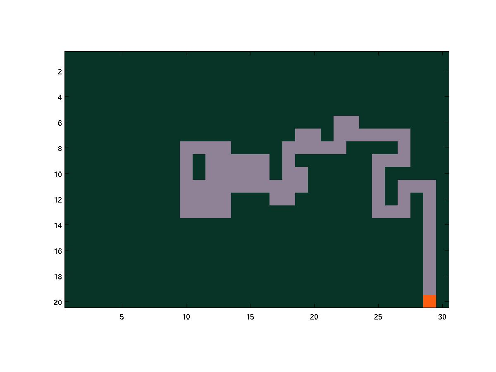
The final frame of a trial fire(20, 30, 10 15) in which the fire
burns itself out.
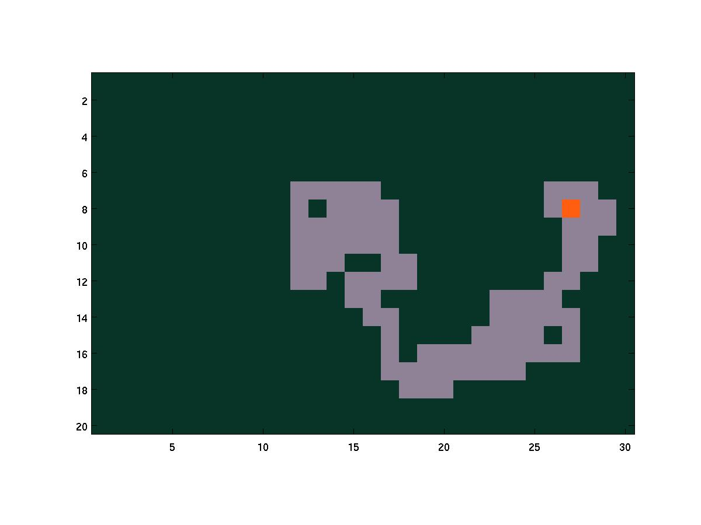
Given a matrix of integers, you can plot an image based on the use of those integers as indices into a prescribed colormap. The syntax as image(A) where A is the matrix of numbers.
For our images, we simply use three colors, with color 1 being the forest green, color 2 being the fiery orange, and color 3 being the burnt-out gray. We set that colormap with the following command.
colormap([.035 .200 .153; 1.00 .367 .063; .561 .510 .592]) % rgb values for green, orange, gray
For example, try copy-pasting these three lines into a script. Then, change the map matrix to modify the image.
colormap([.035 .200 .153; 1.00 .367 .063; .561 .510 .592]) % rgb values for green, orange, gray map = [ 1 1 1 1; 3 3 3 1; 2 3 3 1 ]; image(map);
Write a separate function fireExtra.m that does the same simulation, except this time allowing the fire to spread diagonally as well as horizontally and vertically. At each step, if there are multiple choices for the fire to spread, each should have an equal probability of being picked. Also, if it happens that the simulation ends with the fire at a corner of the grid, credit 1/2 an outcome for each of the two boundaries.